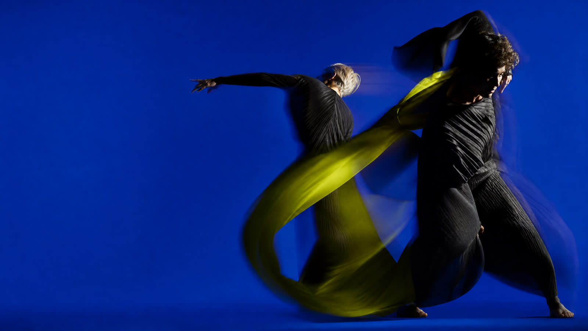
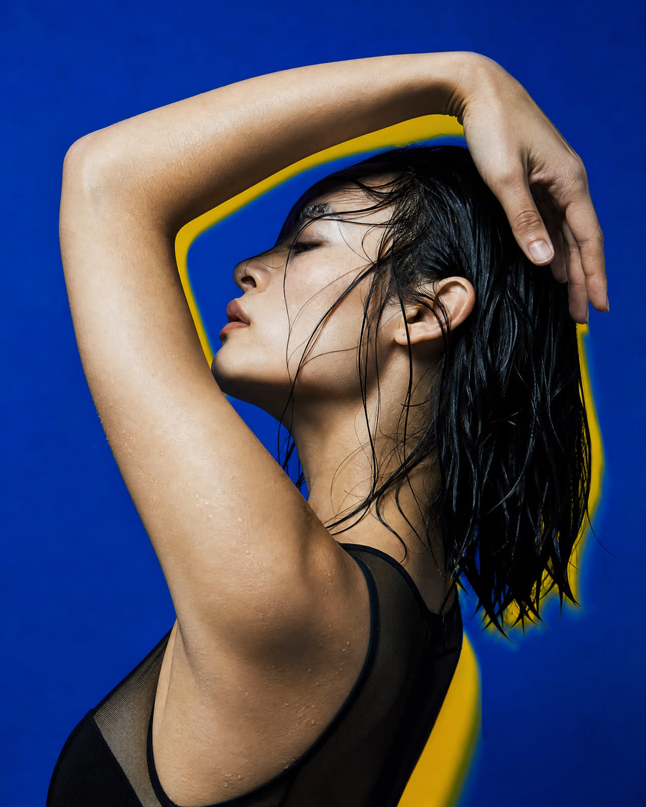

01
Soft Machinery
A duet about the architecture of touch.
14 — 16 MAR

PULSE makes live work for the space between instinct and intention.
A body is never still. Neither are we.
PULSE is a contemporary dance company and platform for movement-led performance. We build shows, workshops and encounters that start with the body and end somewhere unexpected.
A duet about the architecture of touch.
Six bodies, one impossible rhythm.
An evening of work in progress.

We work across disciplines and borders, inviting choreographers, musicians, designers and audiences into the same room. The work stays open until the lights go down.
Get programme notes, rehearsal-room dispatches and first access to tickets. No noise, just the good stuff.
hello@pulse.dance →